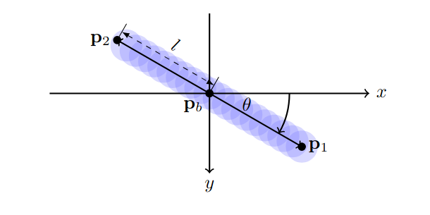

Blur Labelling
Instead of marking the ball as a single point, we annotate the entire motion blur streak. Each annotation specifies the blur's center, length, and orientation, providing richer supervision and allowing the model to infer velocity cues directly from a single frame.
